library(dplyr)
library(ggplot2)
library(dslabs)11 ggplot2
We will be using functions from these three libraries:
11.1 The components of a graph
We will construct a graph that summarizes the US murders dataset that looks like this:
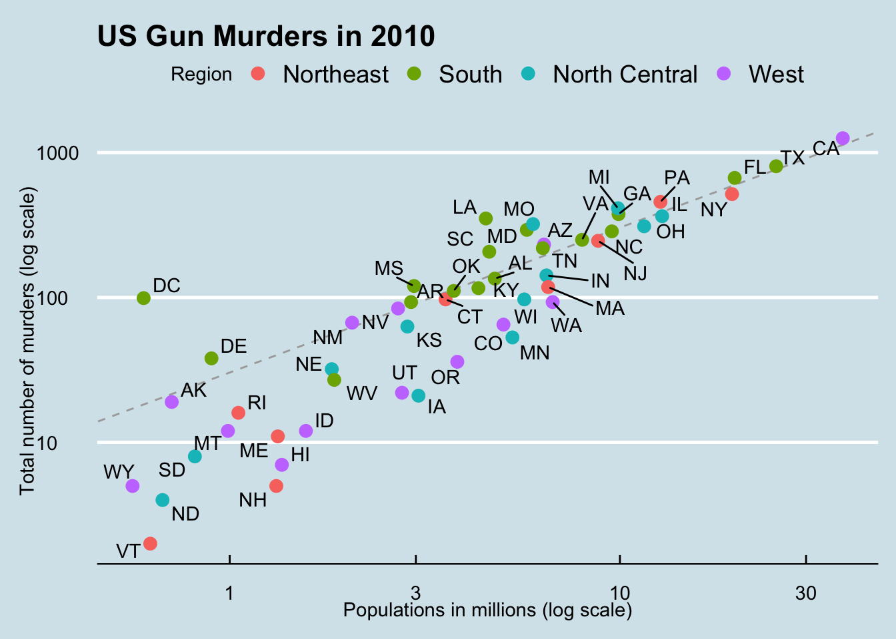
The first step in learning ggplot2 is to be able to break a graph apart into components. Let’s break down the plot above and introduce some of the ggplot2 terminology. The main three components to note are:
- Data: The US murders data table is being summarized. We refer to this as the data component.
- Geometry: The plot above is a scatterplot. This is referred to as the geometry component. Other possible geometries are barplot, histogram, smooth densities, qqplot, and boxplot. We will learn more about these in the Data Visualization part of the book.
- Aesthetic mapping: The plot uses several visual cues to represent the information provided by the dataset. The two most important cues in this plot are the point positions on the x-axis and y-axis, which represent population size and the total number of murders, respectively. Each point represents a different observation, and we map data about these observations to visual cues like x- and y-scale. Color is another visual cue that we map to region. We refer to this as the aesthetic mapping component. How we define the mapping depends on what geometry we are using.
We also note that:
- The points are labeled with the state abbreviations.
- The range of the x-axis and y-axis appears to be defined by the range of the data. They are both on log-scales.
- There are labels, a title, a legend, and we use the style of The Economist magazine.
We will now construct the plot piece by piece.
11.2 ggplot objects
Start by defining the dataset:
ggplot(data = murders)We can also use the pipe:
murders |> ggplot()We call aslo assign the output to a variabel
p <- ggplot(data = murders)
class(p)[1] "gg" "ggplot"To see the plot we can print it:
print(p)
p11.3 Geometries
In ggplot2 we create graphs by adding layers. Layers can define geometries, compute summary statistics, define what scales to use, or even change styles. To add layers, we use the symbol +. In general, a line of code will look like this:
DATA |>
ggplot()+ LAYER 1 + LAYER 2 + … + LAYER N
Usually, the first added layer defines the geometry. We want to make a scatterplot. What geometry do we use?
Let’s look at the cheat sheet: https://rstudio.github.io/cheatsheets/data-visualization.pdf
11.4 Aesthetic mappings
To make a scatter plot we use geom_points. Take a look at the help file and learn that this is how we use it:
murders |> ggplot() +
geom_point(aes(x = population/10^6, y = total))Since we defined p above, we can add a layer like this:
p + geom_point(aes(population/10^6, total))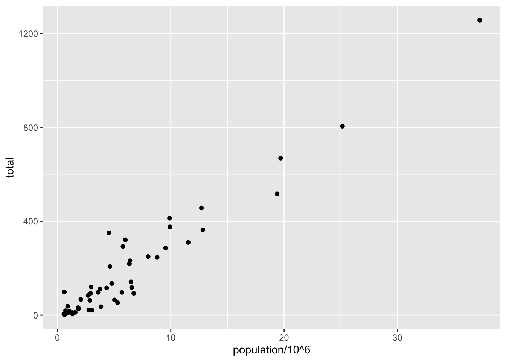
11.5 Layers
To add text we use geom_text:
p + geom_point(aes(population/10^6, total)) +
geom_text(aes(population/10^6, total, label = abb))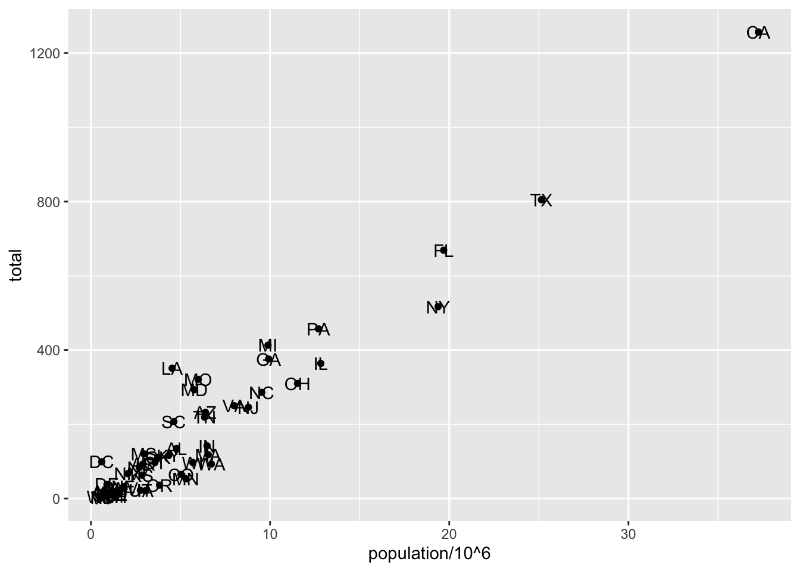
As an example of the unique behavior of aes mentioned above, note that this call:
p_test <- p + geom_text(aes(population/10^6, total, label = abb))is fine, whereas this call:
p_test <- p + geom_text(aes(population/10^6, total), label = abb) will give you an error since abb is not found because it is outside of the aes function. The layer geom_text does not know where to find abb since it is a column name and not a global variable.
11.5.1 Tinkering with arguments
p + geom_point(aes(population/10^6, total), size = 3) +
geom_text(aes(population/10^6, total, label = abb))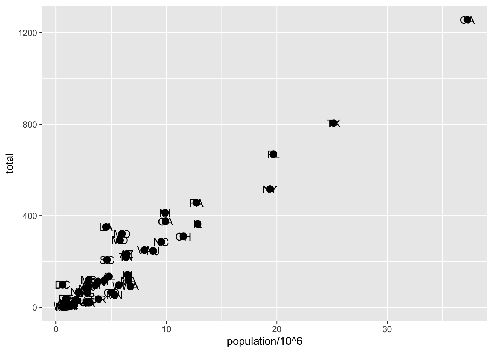
p + geom_point(aes(population/10^6, total), size = 3) +
geom_text(aes(population/10^6, total, label = abb), nudge_x = 1.5)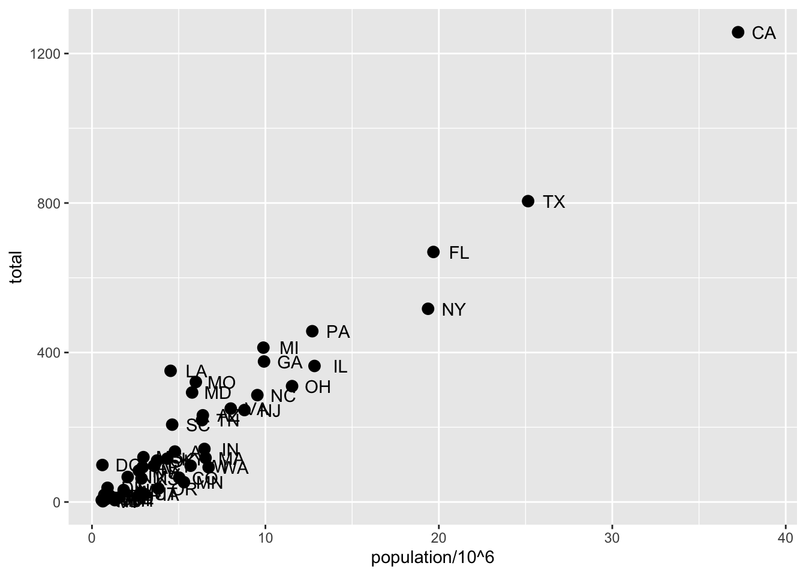
11.6 Global versus local aesthetic mappings
args(ggplot)function (data = NULL, mapping = aes(), ..., environment = parent.frame())
NULLWe can define a global aes in the ggplot function. All the layers will assume this mapping unless we explicitly define another one:
p <- murders |> ggplot(aes(population/10^6, total, label = abb))
p + geom_point(size = 3) +
geom_text(nudge_x = 1.5)
We can overide the global aes by defining one in the geometry functions:
p + geom_point(size = 3) +
geom_text(aes(x = 10, y = 800, label = "Hello there!"))11.7 Scales
p + geom_point(size = 3) +
geom_text(nudge_x = 0.05) +
scale_x_continuous(trans = "log10") +
scale_y_continuous(trans = "log10") 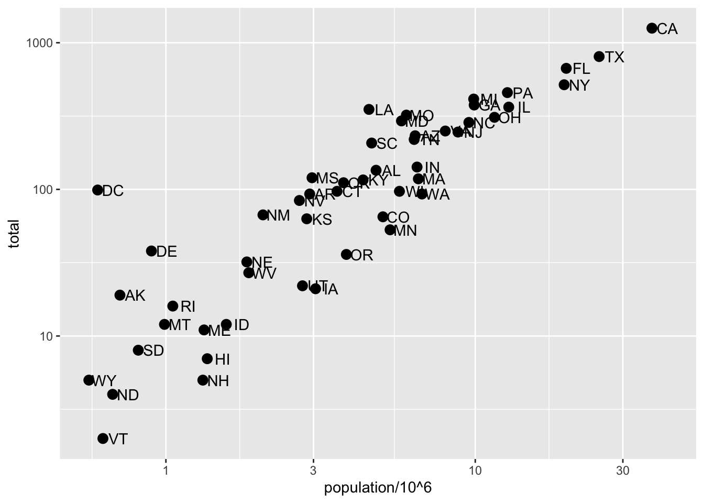
This particular transformation is so common that ggplot2 provides the specialized functions scale_x_log10and scale_y_log10, which we can use to rewrite the code like this:
p + geom_point(size = 3) +
geom_text(nudge_x = 0.05) +
scale_x_log10() +
scale_y_log10() 11.8 Labels and titles
p + geom_point(size = 3) +
geom_text(nudge_x = 0.05) +
scale_x_log10() +
scale_y_log10() +
xlab("Populations in millions (log scale)") +
ylab("Total number of murders (log scale)") +
ggtitle("US Gun Murders in 2010")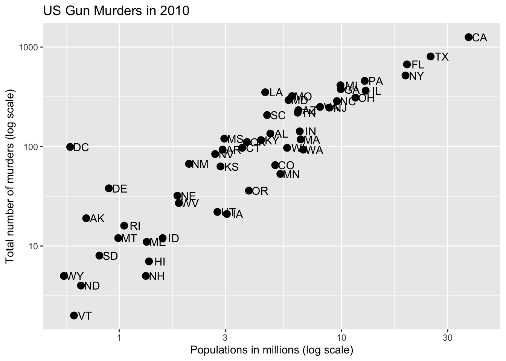
We can also use the labs function:
p + geom_point(size = 3) +
geom_text(nudge_x = 0.05) +
scale_x_log10() +
scale_y_log10() +
labs(x = "Populations in millions (log scale)",
y = "Total number of murders (log scale)",
title = "US Gun Murders in 2010")We are almost there! All we have left to do is add color, a legend, and optional changes to the style.
11.9 Categories as colors
Let’s redefine p so we can test layers easilty:
p <- murders |> ggplot(aes(population/10^6, total, label = abb)) +
geom_text(nudge_x = 0.05) +
scale_x_log10() +
scale_y_log10() +
xlab("Populations in millions (log scale)") +
ylab("Total number of murders (log scale)") +
ggtitle("US Gun Murders in 2010")Here is an exmaple of adding color:
p + geom_point(size = 3, color = "blue")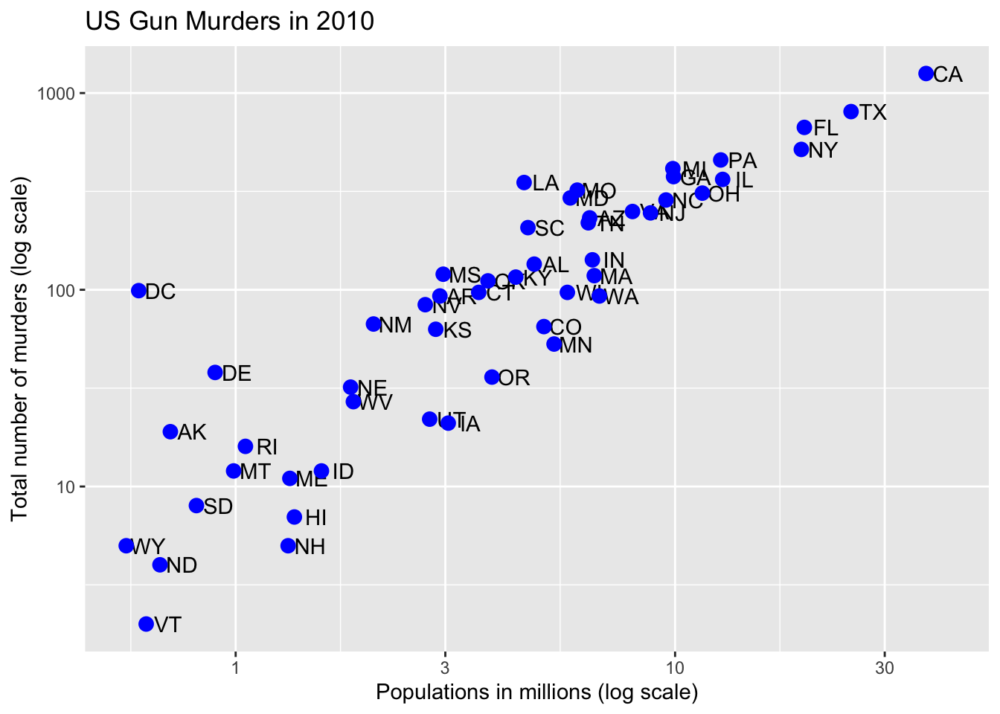
But if we want the color to relate to a variable, we need to include it in the map:
p + geom_point(aes(col = region), size = 3)11.10 Annotation, shapes, and adjustments
We want to add a line with intercept the us rate. So lets comput that
r <- murders |>
summarize(rate = sum(total) / sum(population) * 10^6) |>
pull(rate)Now we can use the geom_abline function.
p + geom_point(aes(col = region), size = 3) +
geom_abline(intercept = log10(r))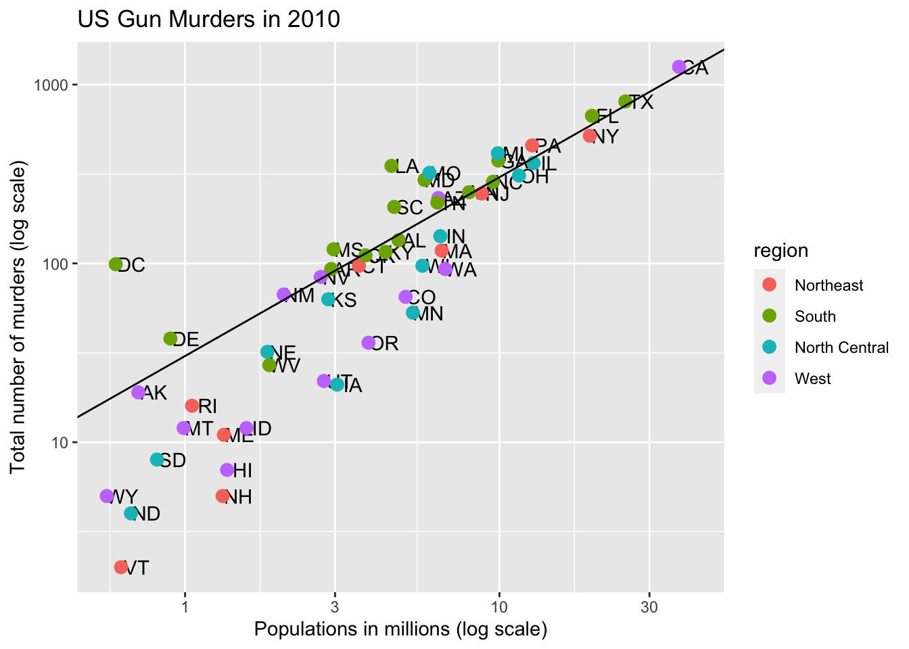
We are very close to the goal. Let’s redefine p so we can easily add the finishing touches:
p <- p + geom_abline(intercept = log10(r), lty = 2, color = "darkgrey") +
geom_point(aes(col=region), size = 3) For example, this is how we change the name of the legend:
p <- p + scale_color_discrete(name = "Region")
p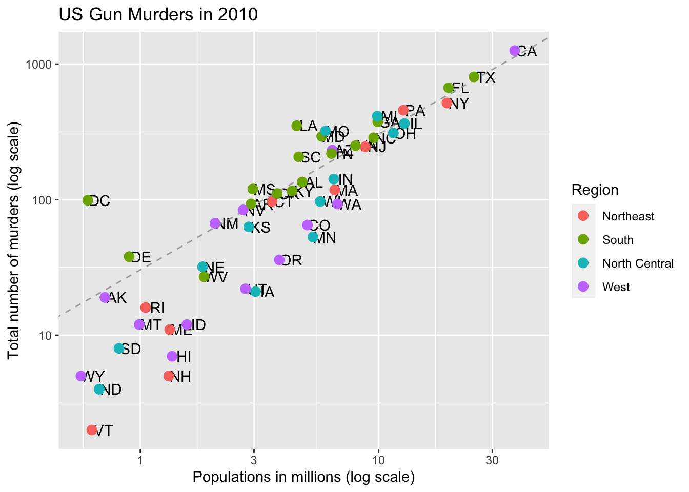
11.11 Add-on packages
The dslabs package can define the look used in the textbook:
ds_theme_set()Many other themes are added by the package ggthemes. Among those are the theme_economist theme that we used. After installing the package, you can change the style by adding a layer like this:
library(ggthemes)
p + theme_economist()
You can see how some of the other themes look by simply changing the function. For instance, you might try the theme_fivethirtyeight() theme instead.
library(ggthemes)
p + theme_fivethirtyeight()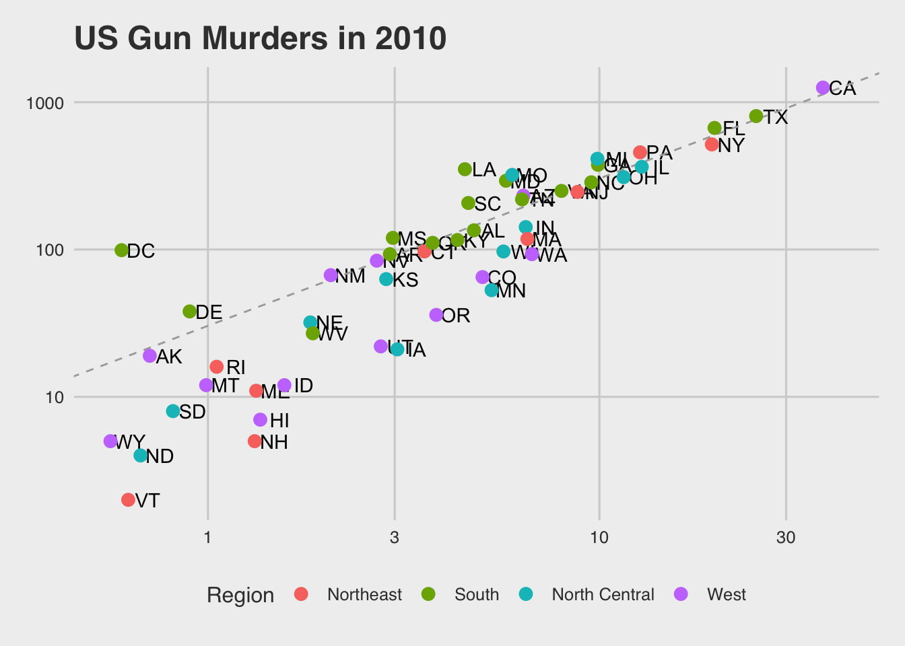
And if you want to ruin the plot, give it the excel theme:
p + theme_excel()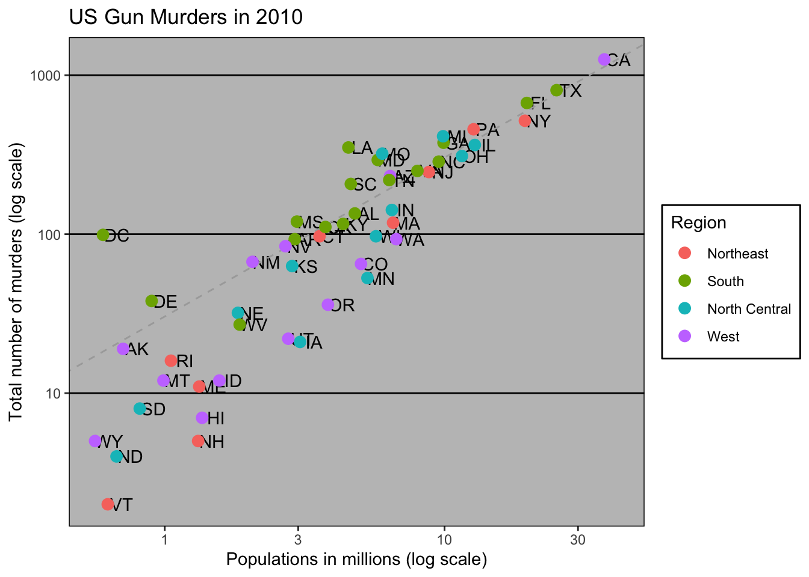
For more fun themes:
library(ThemePark)
p + theme_starwars()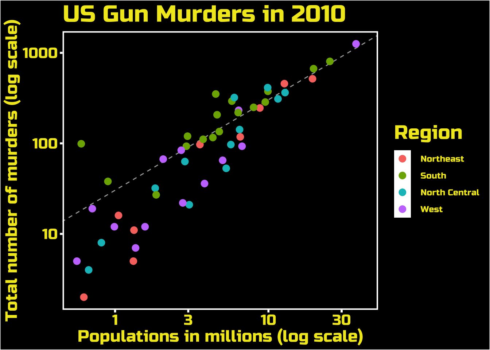
p + theme_zelda()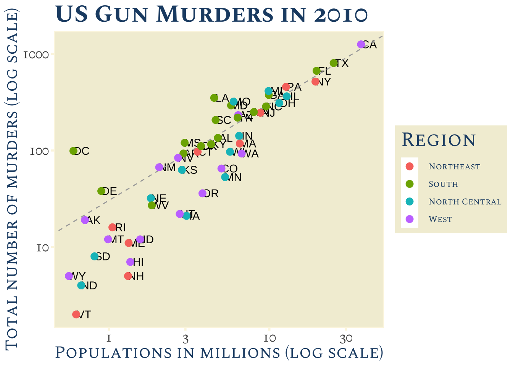
11.12 Putting it all together
Now that we are done testing, we can write one piece of code that produces our desired plot from scratch.
library(ggthemes)
library(ggrepel)
r <- murders |>
summarize(rate = sum(total) / sum(population) * 10^6) |>
pull(rate)
murders |> ggplot(aes(population/10^6, total, label = abb)) +
geom_abline(intercept = log10(r), lty = 2, color = "darkgrey") +
geom_point(aes(col = region), size = 3) +
geom_text_repel() +
scale_x_log10() +
scale_y_log10() +
xlab("Populations in millions (log scale)") +
ylab("Total number of murders (log scale)") +
ggtitle("US Gun Murders in 2010") +
scale_color_discrete(name = "Region") +
theme_economist()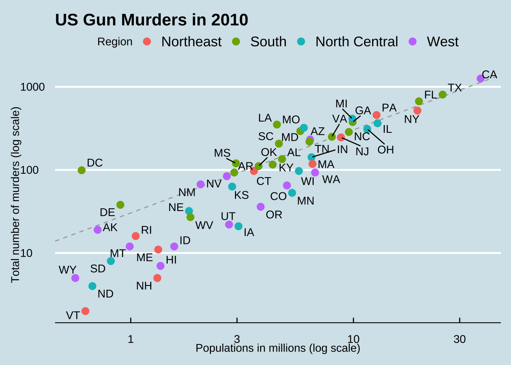
11.13 Grids of plots
There are often reasons to graph plots next to each other. The gridExtra package permits us to do that:
library(gridExtra)
p1 <- murders |> ggplot(aes(log10(population))) + geom_histogram()
p2 <- murders |> ggplot(aes(log10(population), log10(total))) + geom_point()
grid.arrange(p1, p2, ncol = 2)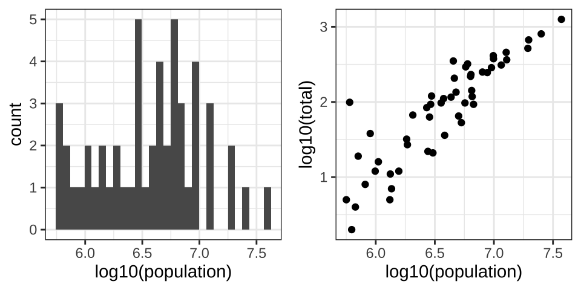
11.14 ggplot2 geometries
We previously introduced the ggplot2 package for data visualization. Here we demonstrate how to generate plots related to distributions, specifically the plots shown earlier in this chapter.
11.14.1 Barplots
To generate a barplot we can use the geom_bar geometry. The default is to count the number of each category and draw a bar. Here is the plot for the regions of the US.
murders |> ggplot(aes(region)) + geom_bar()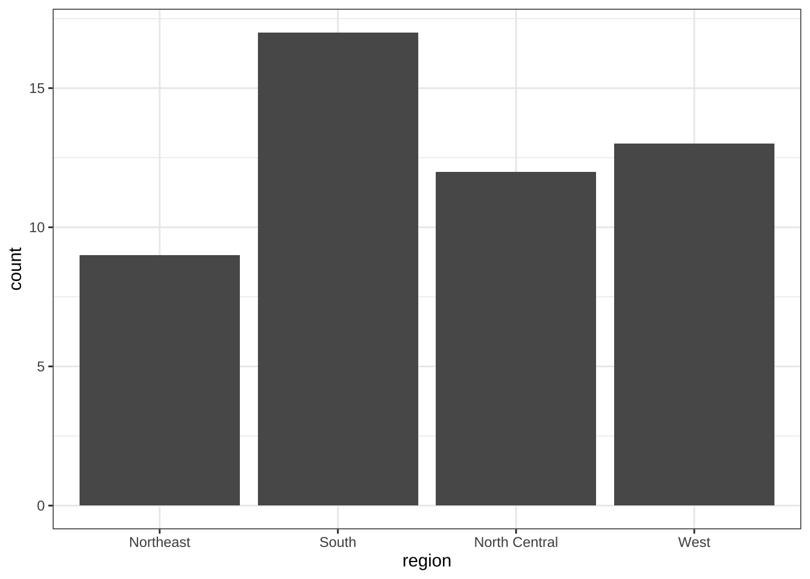
We often already have a table with a distribution that we want to present as a barplot. Here is an example of such a table:
tab <- murders |>
count(region) |>
mutate(proportion = n/sum(n))
tab region n proportion
1 Northeast 9 0.1764706
2 South 17 0.3333333
3 North Central 12 0.2352941
4 West 13 0.2549020We no longer want geom_bar to count, but rather just plot a bar to the height provided by the proportion variable. For this we need to provide x (the categories) and y (the values) and use the stat="identity" option.
tab |> ggplot(aes(region, proportion)) + geom_bar(stat = "identity")11.14.2 Histograms
To generate histograms we use geom_histogram. By looking at the help file for this function, we learn that the only required argument is x, the variable for which we will construct a histogram. We dropped the x because we know it is the first argument. The code looks like this:
heights |>
filter(sex == "Female") |>
ggplot(aes(height)) +
geom_histogram()If we run the code above, it gives us a message:
stat_bin()usingbins = 30. Pick better value withbinwidth.
We previously used a bin size of 1 inch, so the code looks like this:
heights |>
filter(sex == "Female") |>
ggplot(aes(height)) +
geom_histogram(binwidth = 1)Finally, if for aesthetic reasons we want to add color, we use the arguments described in the help file. We also add labels and a title:
heights |>
filter(sex == "Female") |>
ggplot(aes(height)) +
geom_histogram(binwidth = 1, fill = "blue", col = "black") +
xlab("Female heights in inches") +
ggtitle("Histogram")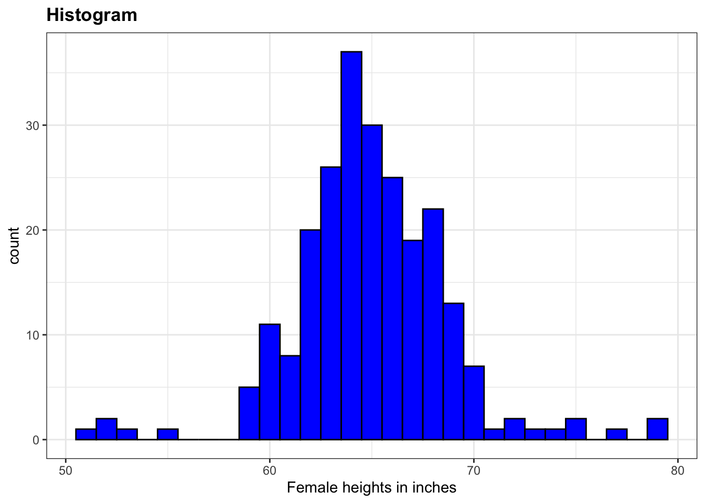
11.14.3 Density plots
To create a smooth density, we use the geom_density. To make a smooth density plot with the data previously shown as a histogram we can use this code:
heights |>
filter(sex == "Female") |>
ggplot(aes(height)) +
geom_density()To fill in with color, we can use the fill argument.
heights |>
filter(sex == "Female") |>
ggplot(aes(height)) +
geom_density(fill = "blue")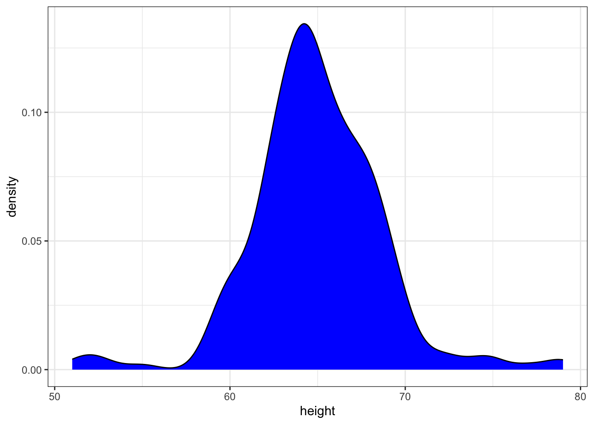
To change the smoothness of the density, we use the adjust argument to multiply the default value by that adjust. For example, if we want the bandwidth to be twice as big we use:
heights |>
filter(sex == "Female") |>
ggplot(aes(height)) +
geom_density(fill = "blue", adjust = 2)11.14.4 Boxplots
The geometry for boxplot is geom_boxplot. As discussed, boxplots are useful for comparing distributions. For example, below are the previously shown heights for women, but compared to men. For this geometry, we need arguments x as the categories, and y as the values.
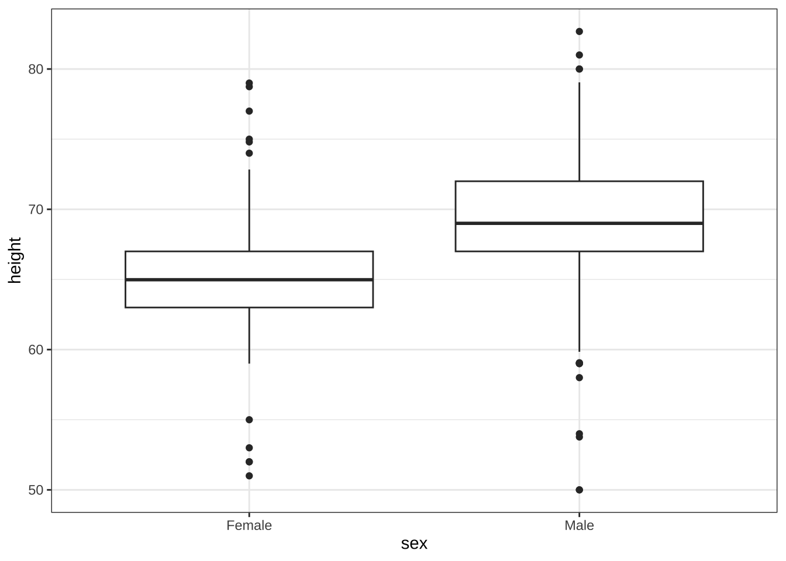
11.14.5 QQ-plots
For qq-plots we use the geom_qq geometry. From the help file, we learn that we need to specify the sample (we will learn about samples in a later chapter). Here is the qqplot for men heights.
heights |> filter(sex == "Male") |>
ggplot(aes(sample = height)) +
geom_qq()
By default, the sample variable is compared to a normal distribution with average 0 and standard deviation 1. To change this, we use the dparams arguments based on the help file. Adding an identity line is as simple as assigning another layer. For straight lines, we use the geom_abline function. The default line is the identity line (slope = 1, intercept = 0).
params <- heights |> filter(sex=="Male") |>
summarize(mean = mean(height), sd = sd(height))
heights |> filter(sex=="Male") |>
ggplot(aes(sample = height)) +
geom_qq(dparams = params) +
geom_abline()Another option here is to scale the data first and then make a qqplot against the standard normal.
heights |>
filter(sex=="Male") |>
ggplot(aes(sample = scale(height))) +
geom_qq() +
geom_abline()11.14.6 Images
We introduce the two geometries used to create images: geom_tile and geom_raster. They behave similarly; to see how they differ, please consult the help file. To create an image in ggplot2 we need a data frame with the x and y coordinates as well as the values associated with each of these. Here is a data frame.
x <- expand.grid(x = 1:12, y = 1:10) |>
mutate(z = 1:120) Note that this is the tidy version of a matrix, matrix(1:120, 12, 10). To plot the image we use the following code:
x |> ggplot(aes(x, y, fill = z)) +
geom_raster()With these images you will often want to change the color scale. This can be done through the scale_fill_gradientn layer.
x |> ggplot(aes(x, y, fill = z)) +
geom_raster() +
scale_fill_gradientn(colors = terrain.colors(10, alpha = 1))
11.15 Exercises
Create a ggplot object using the pipe to assign the heights data to a ggplot object. Assign
heightto thexvalues through theaesfunction.Add a layer to actually make the histogram. Use the object created in the previous exercise and the
geom_histogramfunction to make the histogram.Note that when we run the code in the previous exercise we get the warning:
stat_bin()usingbins = 30. Pick better value withbinwidth. Use thebinwidthargument to change the histogram made in the previous exercise to use bins of size 1 inch.Instead of a histogram, we are going to make a smooth density plot. In this case we will not make an object, but instead render the plot with one line of code. Change the geometry in the code previously used to make a smooth density instead of a histogram.
Now we are going to make a density plot for males and females separately. We can do this using the
groupargument. We assign groups via the aesthetic mapping as each point needs to a group before making the calculations needed to estimate a density.We can also assign groups through the
colorargument. This has the added benefit that it uses color to distinguish the groups. Change the code above to use color.We can also assign groups through the
fillargument. This has the added benefit that it uses colors to distinguish the groups, like this:
heights |>
ggplot(aes(height, fill = sex)) +
geom_density() However, here the second density is drawn over the other. We can make the curves more visible by using alpha blending to add transparency. Set the alpha parameter to 0.2 in the geom_density function to make this change.
Using the pipe
|>, create an objectpwith theheightsdataset as the data.Now we are going to add a layer and the corresponding aesthetic mappings. For the murders data we plotted total murders versus population sizes. Explore the
murdersdata frame to remind yourself what are the names for these two variables and select the correct answer.
stateandabb.total_murdersandpopulation_size.totalandpopulation.murdersandsize.
- To create a scatterplot we add a layer with
geom_point. The aesthetic mappings require us to define the x-axis and y-axis variables, respectively. So the code looks like this:
murders |> ggplot(aes(x = , y = )) +
geom_point()except we have to define the two variables x and y. Fill this out with the correct variable names.
- Note that if we don’t use argument names, we can obtain the same plot by making sure we enter the variable names in the right order like this:
murders |> ggplot(aes(population, total)) +
geom_point()Remake the plot but now with total in the x-axis and population in the y-axis.
- If instead of points we want to add text, we can use the
geom_text()orgeom_label()geometries. The following code
murders |> ggplot(aes(population, total)) + geom_label()will give us the error message: Error: geom_label requires the following missing aesthetics: label
Why is this?
- We need to map a character to each point through the label argument in aes.
- We need to let
geom_labelknow what character to use in the plot. - The
geom_labelgeometry does not require x-axis and y-axis values. geom_labelis not a ggplot2 command.
Rewrite the code above to use abbreviation as the label through
aesChange the color of the labels to blue. How will we do this?
- Adding a column called
bluetomurders. - Because each label needs a different color we map the colors through
aes. - Use the
colorargument inggplot. - Because we want all colors to be blue, we do not need to map colors, just use the color argument in
geom_label.
Rewrite the code above to make the labels blue.
Now suppose we want to use color to represent the different regions. In this case which of the following is most appropriate:
- Adding a column called
colortomurderswith the color we want to use. - Because each label needs a different color we map the colors through the color argument of
aes. - Use the
colorargument inggplot. - Because we want all colors to be blue, we do not need to map colors, just use the color argument in
geom_label.
Rewrite the code above to make the labels’ color be determined by the state’s region.
Now we are going to change the x-axis to a log scale to account for the fact the distribution of population is skewed. Let’s start by defining an object
pholding the plot we have made up to now
p <- murders |>
ggplot(aes(population, total, label = abb, color = region)) +
geom_label() To change the y-axis to a log scale we learned about the scale_x_log10() function. Add this layer to the object p to change the scale and render the plot.
Repeat the previous exercise but now change both axes to be in the log scale.
Now edit the code above to add the title “Gun murder data” to the plot. Hint: use the
ggtitlefunction.